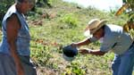
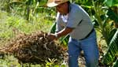
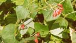
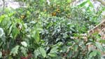
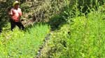

Planting Crop to Conserve Soil and Water
Intercropping

The planting of more than one crop species simultaneously on a piece of ground. Encouraging this practice gives support for a traditional Mesoamerican farming system that has shown itself to a) increase yields by increasing plant density; b) provide natural pest control by discouraging pests and encouraging predators; c) discourage weeds through shading; d) allow pairing of grasses with legumes for soil enrichment; e) provide crop insurance when one crop yields poorly; f) stagger the expenditure of labor over a longer period of time; and g) serve to extend the growing season.
Mulching
 {kind=link}
{kind=link}
The practice of leaving crop residues on the field following harvest and/or applying additional plant material to the soil surface. This practice serves to conserve moisture, retard weed growth, and improve soil structure and fertility.
Leguminous Cover Cropping
{kind=link}
This is a crop grown primarily to prevent or reduce erosion and improve soil fertility. Leguminous cover crops also serve to improve soil structure and build up organic matter content of the soil. They prevent erosion by binding soil and by reducing the impact of raindrops striking the soil.
Agroforestry
 {kind=link}
{kind=link}
Agroforestry is a holistic approach to land use, based on the combination of trees and shrubs with crops, pastures or animals on the same land unit, either in sequence or at the same time (Lundgren, 1982). It is an age-old land use practice familiar to millions of peasant farmers and herders in many parts of the world. Industrial agriculture with its bias towards mechanization and monoculture has ignored its benefits.
Tree Cropping
The planting of trees (i.e. coffee trees with leguminous shade trees) on hillside farms for the production of food or fuel.
Reforestation
Planting once forested hillsides with commercially valuable species that will also protect the soil, watershed, and fauna.